ready?
Walkthru is working
on something
→ honest

It has everything
to do with your launch
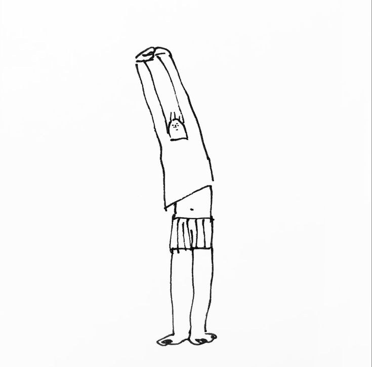
Strangers
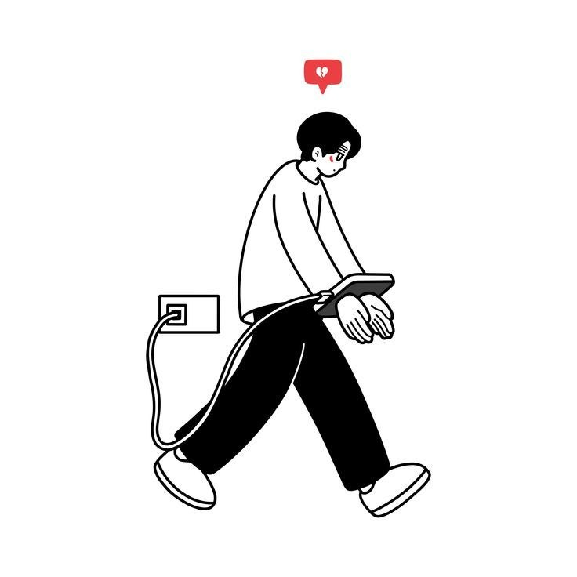
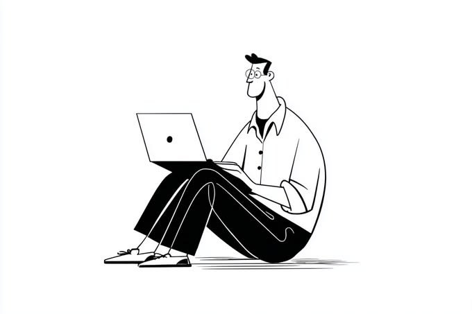
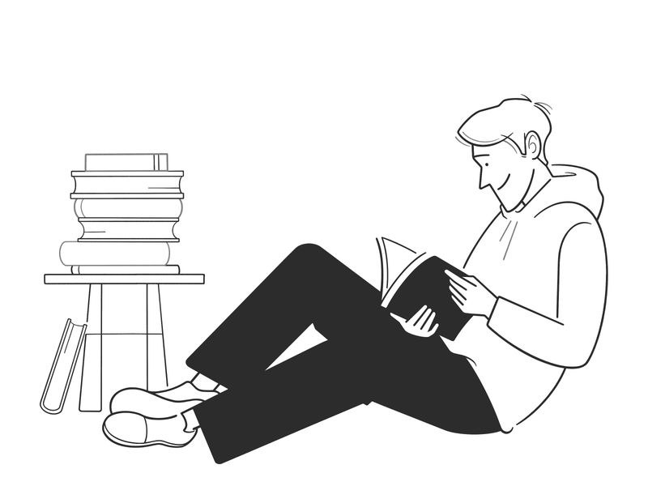
it has to do with every visitor
We are not
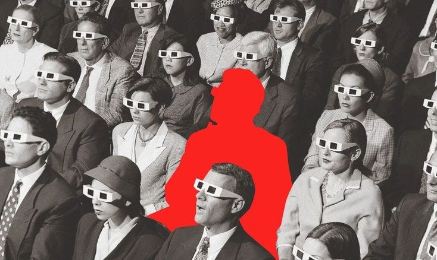
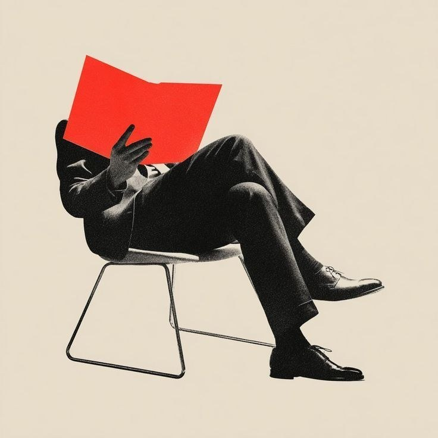
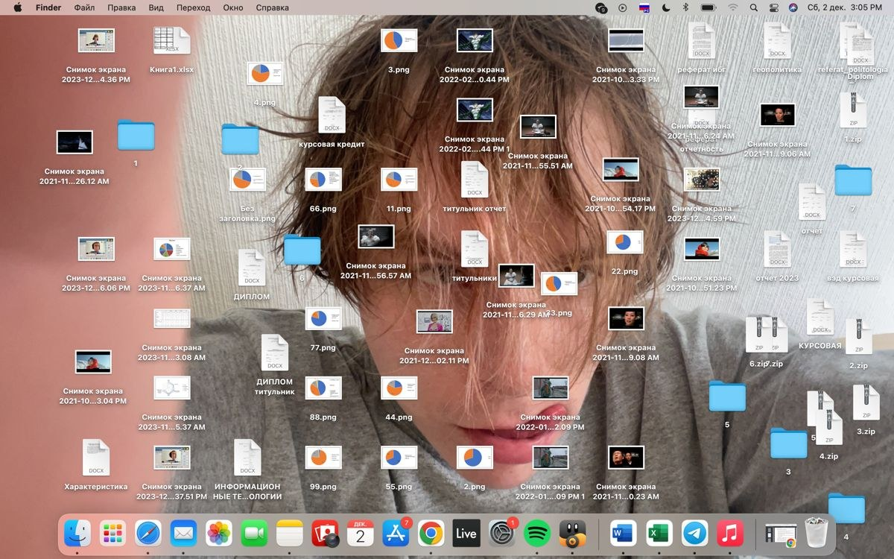
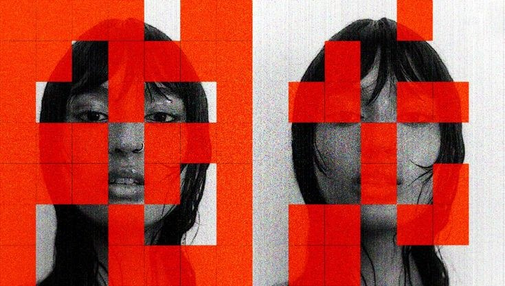
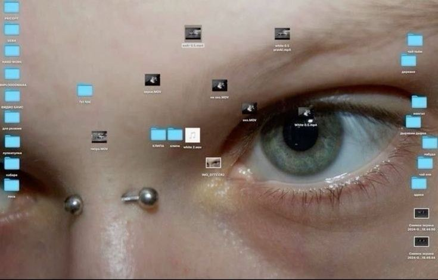
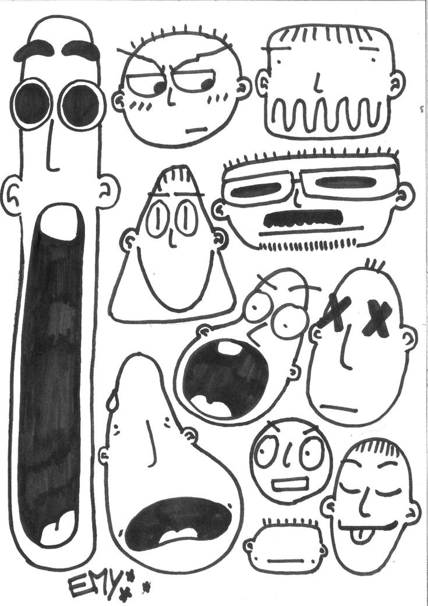
The time to
guess is over
No. 01 · Launch check
Walkthru
Fig. 1 · Scout, the test user
Strangers
click
differently
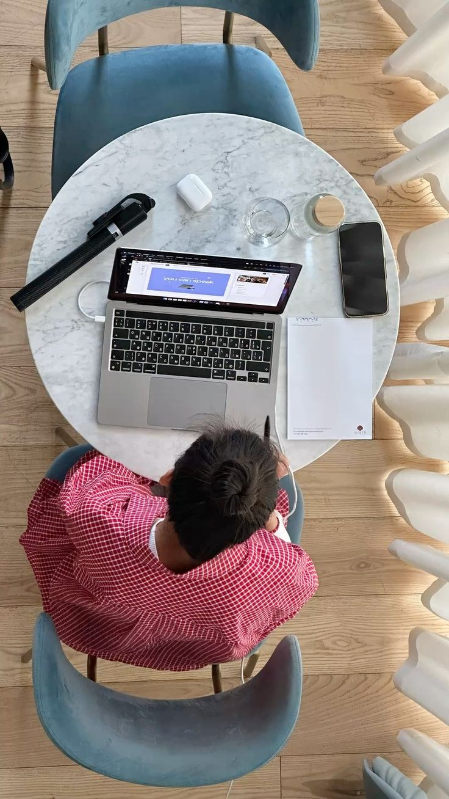
Treat every visitor
the way they deserve
Every one of them
Every click
In your app
counted, step by step
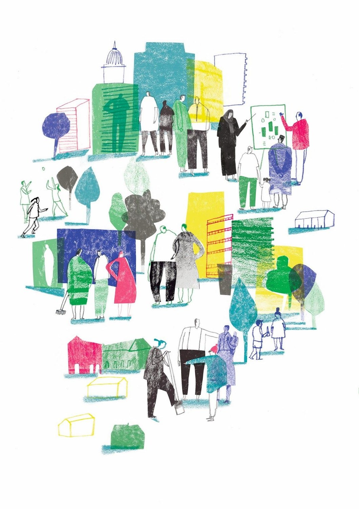
one silent error
ends the
visit
they would leave
Imagine
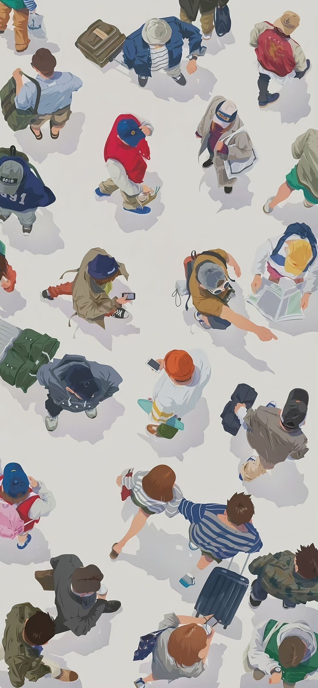
your launch, checked
We're
Not
just a scanner
Grounded in evidence
We walk it
No
guesses
Going
We're
honest
not just
scanning pages
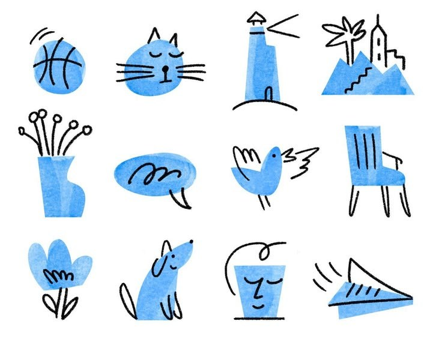

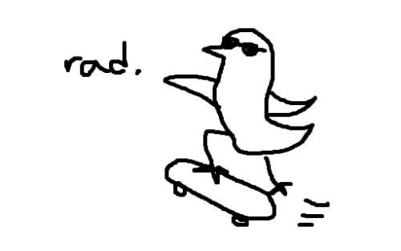
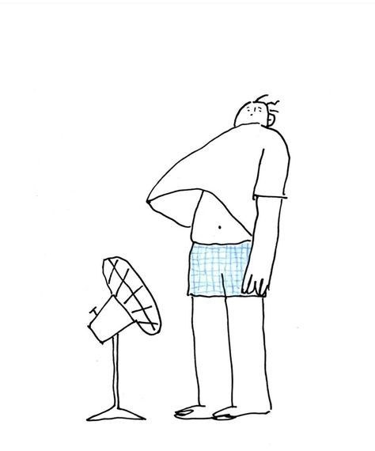
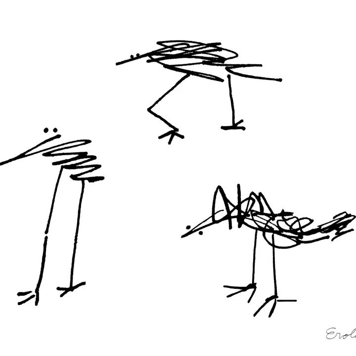
Launch
checked.
that's right
passwords shared. It tests in your own signed-in tab.

TripVerse · localhost:5173 · step 4 of 30
but for every single step
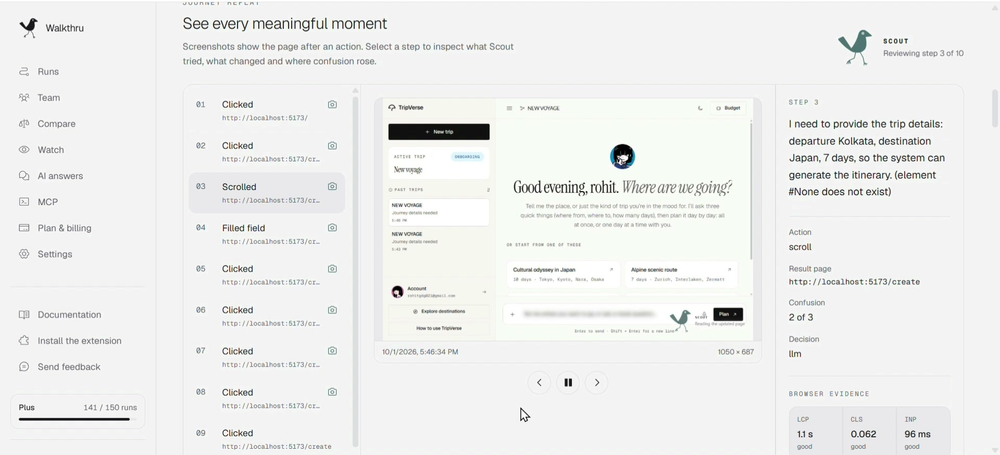
Journey replay · every meaningful moment
Rerun
but

— accounting for
the every click
in every flow →
for this to work
we need to see it
the way strangers do
checking everything
Absolutely.
Fig. 2 · 21 checks
Not after
launch
But now.
walkthru.dev / launch-check